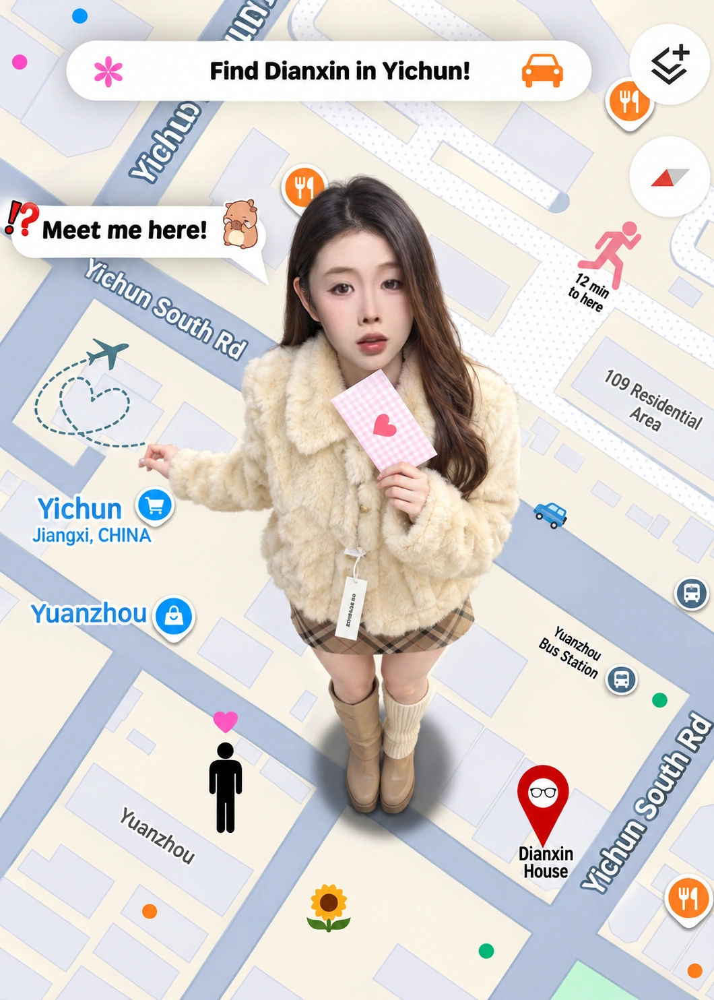

ABOUT THE JOURNAL关于小点昕

Meet
Dianxin.
我是小点昕，在这里记录日常穿搭。我喜欢从一处小细节开始：一件短外套，露出多少格纹裙摆才好看？换一双长靴，整套衣服的比例又会怎么变？
I’m Dianxin. This is my personal style journal. I like to start with a small detail. How much plaid should peek out beneath a short jacket? What happens to the silhouette when I add tall boots?
穿搭手记 / STYLE NOTES
A shorter jacket.
A longer line.
短绒停在胯部，格纹从下摆露出一截，长靴接住裙下的线条。